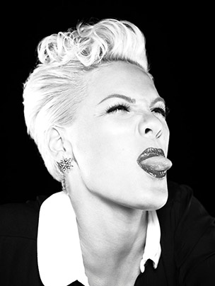
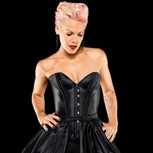
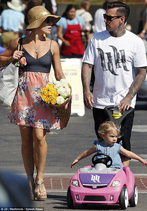

Alecia Beth Moore, commonly known as Pink (stylized as P!nk, was born September 8th, 1979 and is a famous singer, songwriter as well as actress. She has 6 studio albums, they include Can't Take Me Home (2000), Missundaztood (2001), Try This (2003), I'm Not Dead (2006), Funhouse (2008) and The Truth About Love (2012). Early in Pink's singing career, she was well known as R&B genre and style with the album Can't Take Me Home. She soon became known for her spunky pop rock style with the album Missundaztood.
Pink was originally in a girl group called Choice, but her solo career took off with the famous single There You Go. She soon then released her first album in 2000 Can't take me home. Since then, a few of her top hits include: So What, F***ing Perfect, Just Give Me A Reason, Who Knew, Raise Your Glass, Please Don't Leave Me, Blow Me One Last Kiss. Her inspiration for song writting she credits to Janice Joplin and a great musical influence for her Madonna. P!nk is known for breaking boundaries and pushing the envelope throughout her career. Most often, she is recognized as "Most Trailblazing Artist". She isn't afraid to speak her mind, say how she feels, stand up for what she believes in, or take charge of something she personally wants. P!nk is a strong, fearless woman who is known as a rebel but also a great inspiration for woman all around the world. She won Woman of the Year Award at the 2013 Billboard Women in Music event.
P!nk is married to Carey Hart who is a professional motocross racer and together they have a daughter, Willow Sage Hart, born June 2nd, 2011.
My personal favourite song recorded and performed by P!nk is Just Like a Pill. The lyrics and rythem of the song is both compelling and moving for me. My favourite cover done for this song is by
Things to watch
Source: Pink's Website